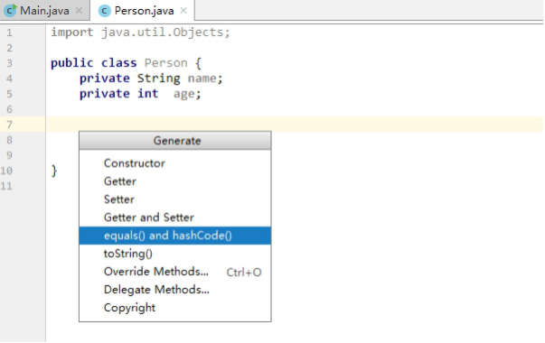
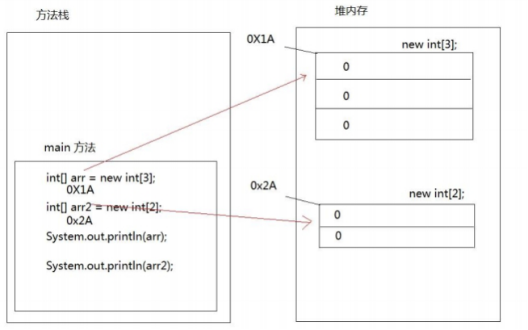
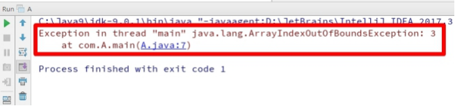
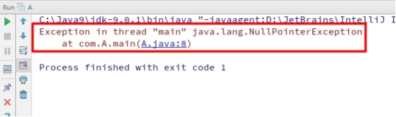

day01【Object类、常用API】主要内容教学目标第一章 Object类1.1 概述1.2 toString方法方法摘要覆盖重写1.3 equals方法方法摘要默认地址比较对象内容比较1.4 Objects类第二章 日期时间类2.1 Date类概述常用方法2.2 DateFormat类构造方法格式规则常用方法format方法parse方法2.3 练习2.4 Calendar类概念获取方式常用方法get/set方法add方法getTime方法第三章 System类3.1 currentTimeMillis方法练习3.2 arraycopy方法练习第四章 StringBuilder类4.1 字符串拼接问题4.2 StringBuilder概述4.3 构造方法4.4 常用方法append方法toString方法第五章 包装类5.1 概述5.2 装箱与拆箱5.3自动装箱与自动拆箱5.3 基本类型与字符串之间的转换基本类型转换为String
day01【Object类、常用API】
主要内容
- Object类
- Date类
- DateFormat类
- Calendar类
- System类
- StringBuilder类
- 包装类
教学目标
能够说出Object类的特点
能够重写Object类的toString方法
能够重写Object类的equals方法
能够使用日期类输出当前日期
能够使用将日期格式化为字符串的方法
能够使用将字符串转换成日期的方法
能够使用System类的数组复制方法
能够使用System类获取当前毫秒时刻值
能够说出使用StringBuilder类可以解决的问题
能够使用StringBuilder进行字符串拼接操作
能够说出8种基本类型对应的包装类名称
能够说出自动装箱、自动拆箱的概念
能够将字符串转换为对应的基本类型
能够将基本类型转换为对应的字符串
第一章 Object类
1.1 概述
java.lang.Object类是Java语言中的根类，即所有类的父类。它中描述的所有方法子类都可以使用。在对象实例化的时候，最终找的父类就是Object。
如果一个类没有特别指定父类， 那么默认则继承自Object类。例如：
public class MyClass /*extends Object*/ { // ...}根据JDK源代码及Object类的API文档，Object类当中包含的方法有11个。今天我们主要学习其中的2个：
public String toString()：返回该对象的字符串表示。public boolean equals(Object obj)：指示其他某个对象是否与此对象“相等”。
1.2 toString方法
方法摘要
public String toString()：返回该对象的字符串表示。
toString方法返回该对象的字符串表示，其实该字符串内容就是对象的类型+@+内存地址值。
由于toString方法返回的结果是内存地址，而在开发中，经常需要按照对象的属性得到相应的字符串表现形式，因此也需要重写它。
覆盖重写
如果不希望使用toString方法的默认行为，则可以对它进行覆盖重写。例如自定义的Person类：
xpublic class Person { private String name; private int age; public String toString() { return "Person{" + "name='" + name + '\'' + ", age=" + age + '}'; } // 省略构造器与Getter Setter}在IntelliJ IDEA中，可以点击Code菜单中的Generate...，也可以使用快捷键alt+insert，点击toString()选项。选择需要包含的成员变量并确定。如下图所示：
小贴士： 在我们直接使用输出语句输出对象名的时候,其实通过该对象调用了其toString()方法。
1.3 equals方法
方法摘要
public boolean equals(Object obj)：指示其他某个对象是否与此对象“相等”。
调用成员方法equals并指定参数为另一个对象，则可以判断这两个对象是否是相同的。这里的“相同”有默认和自定义两种方式。
默认地址比较
如果没有覆盖重写equals方法，那么Object类中默认进行==运算符的对象地址比较，只要不是同一个对象，结果必然为false。
对象内容比较
如果希望进行对象的内容比较，即所有或指定的部分成员变量相同就判定两个对象相同，则可以覆盖重写equals方法。例如：
xxxxxxxxxximport java.util.Objects;public class Person { private String name; private int age; public boolean equals(Object o) { // 如果对象地址一样，则认为相同 if (this == o) return true; // 如果参数为空，或者类型信息不一样，则认为不同 if (o == null || getClass() != o.getClass()) return false; // 转换为当前类型 Person person = (Person) o; // 要求基本类型相等，并且将引用类型交给java.util.Objects类的equals静态方法取用结果 return age == person.age && Objects.equals(name, person.name); }}这段代码充分考虑了对象为空、类型一致等问题，但方法内容并不唯一。大多数IDE都可以自动生成equals方法的代码内容。在IntelliJ IDEA中，可以使用Code菜单中的Generate…选项，也可以使用快捷键alt+insert，并选择equals() and hashCode()进行自动代码生成。如下图所示：



tips：Object类当中的hashCode等其他方法，今后学习。
1.4 Objects类
在刚才IDEA自动重写equals代码中，使用到了java.util.Objects类，那么这个类是什么呢？
在JDK7添加了一个Objects工具类，它提供了一些方法来操作对象，它由一些静态的实用方法组成，这些方法是null-save（空指针安全的）或null-tolerant（容忍空指针的），用于计算对象的hashcode、返回对象的字符串表示形式、比较两个对象。
在比较两个对象的时候，Object的equals方法容易抛出空指针异常，而Objects类中的equals方法就优化了这个问题。方法如下：
public static boolean equals(Object a, Object b):判断两个对象是否相等。
我们可以查看一下源码，学习一下：
xxxxxxxxxxpublic static boolean equals(Object a, Object b) { return (a == b) || (a != null && a.equals(b)); }第二章 日期时间类
2.1 Date类
概述
java.util.Date类 表示特定的瞬间，精确到毫秒。
继续查阅Date类的描述，发现Date拥有多个构造函数，只是部分已经过时，但是其中有未过时的构造函数可以把毫秒值转成日期对象。
public Date()：分配Date对象并初始化此对象，以表示分配它的时间（精确到毫秒）。public Date(long date)：分配Date对象并初始化此对象，以表示自从标准基准时间（称为“历元（epoch）”，即1970年1月1日00:00:00 GMT）以来的指定毫秒数。
tips: 由于我们处于东八区，所以我们的基准时间为1970年1月1日8时0分0秒。
简单来说：使用无参构造，可以自动设置当前系统时间的毫秒时刻；指定long类型的构造参数，可以自定义毫秒时刻。例如：
xxxxxxxxxximport java.util.Date;public class Demo01Date { public static void main(String[] args) { // 创建日期对象，把当前的时间 System.out.println(new Date()); // Tue Jan 16 14:37:35 CST 2018 // 创建日期对象，把当前的毫秒值转成日期对象 System.out.println(new Date(0L)); // Thu Jan 01 08:00:00 CST 1970 }}tips:在使用println方法时，会自动调用Date类中的toString方法。Date类对Object类中的toString方法进行了覆盖重写，所以结果为指定格式的字符串。
常用方法
Date类中的多数方法已经过时，常用的方法有：
public long getTime()把日期对象转换成对应的时间毫秒值。
2.2 DateFormat类
java.text.DateFormat 是日期/时间格式化子类的抽象类，我们通过这个类可以帮我们完成日期和文本之间的转换,也就是可以在Date对象与String对象之间进行来回转换。
- 格式化：按照指定的格式，从Date对象转换为String对象。
- 解析：按照指定的格式，从String对象转换为Date对象。
构造方法
由于DateFormat为抽象类，不能直接使用，所以需要常用的子类java.text.SimpleDateFormat。这个类需要一个模式（格式）来指定格式化或解析的标准。构造方法为：
public SimpleDateFormat(String pattern)：用给定的模式和默认语言环境的日期格式符号构造SimpleDateFormat。
参数pattern是一个字符串，代表日期时间的自定义格式。
格式规则
常用的格式规则为：
| 标识字母（区分大小写） | 含义 |
|---|---|
| y | 年 |
| M | 月 |
| d | 日 |
| H | 时 |
| m | 分 |
| s | 秒 |
备注：更详细的格式规则，可以参考SimpleDateFormat类的API文档0。
创建SimpleDateFormat对象的代码如：
xxxxxxxxxximport java.text.DateFormat;import java.text.SimpleDateFormat;public class Demo02SimpleDateFormat { public static void main(String[] args) { // 对应的日期格式如：2018-01-16 15:06:38 DateFormat format = new SimpleDateFormat("yyyy-MM-dd HH:mm:ss"); } }常用方法
DateFormat类的常用方法有：
public String format(Date date)：将Date对象格式化为字符串。public Date parse(String source)：将字符串解析为Date对象。
format方法
使用format方法的代码为：
xxxxxxxxxximport java.text.DateFormat;import java.text.SimpleDateFormat;import java.util.Date;/* 把Date对象转换成String*/public class Demo03DateFormatMethod { public static void main(String[] args) { Date date = new Date(); // 创建日期格式化对象,在获取格式化对象时可以指定风格 DateFormat df = new SimpleDateFormat("yyyy年MM月dd日"); String str = df.format(date); System.out.println(str); // 2008年1月23日 }}parse方法
使用parse方法的代码为：
xxxxxxxxxximport java.text.DateFormat;import java.text.ParseException;import java.text.SimpleDateFormat;import java.util.Date;/* 把String转换成Date对象*/public class Demo04DateFormatMethod { public static void main(String[] args) throws ParseException { DateFormat df = new SimpleDateFormat("yyyy年MM月dd日"); String str = "2018年12月11日"; Date date = df.parse(str); System.out.println(date); // Tue Dec 11 00:00:00 CST 2018 }}2.3 练习
请使用日期时间相关的API，计算出一个人已经出生了多少天。
思路：
1.获取当前时间对应的毫秒值
2.获取自己出生日期对应的毫秒值
3.两个时间相减（当前时间– 出生日期）
代码实现：
xxxxxxxxxxpublic static void function() throws Exception { System.out.println("请输入出生日期 格式 YYYY-MM-dd"); // 获取出生日期,键盘输入 String birthdayString = new Scanner(System.in).next(); // 将字符串日期,转成Date对象 // 创建SimpleDateFormat对象,写日期模式 SimpleDateFormat sdf = new SimpleDateFormat("yyyy-MM-dd"); // 调用方法parse,字符串转成日期对象 Date birthdayDate = sdf.parse(birthdayString); // 获取今天的日期对象 Date todayDate = new Date(); // 将两个日期转成毫秒值,Date类的方法getTime long birthdaySecond = birthdayDate.getTime(); long todaySecond = todayDate.getTime(); long secone = todaySecond-birthdaySecond; if (secone < 0){ System.out.println("还没出生呢"); } else { System.out.println(secone/1000/60/60/24); }}2.4 Calendar类
概念
日历我们都见过

java.util.Calendar是日历类，在Date后出现，替换掉了许多Date的方法。该类将所有可能用到的时间信息封装为静态成员变量，方便获取。日历类就是方便获取各个时间属性的。
获取方式
Calendar为抽象类，由于语言敏感性，Calendar类在创建对象时并非直接创建，而是通过静态方法创建，返回子类对象，如下：
Calendar静态方法
public static Calendar getInstance()：使用默认时区和语言环境获得一个日历
例如：
xxxxxxxxxximport java.util.Calendar;public class Demo06CalendarInit { public static void main(String[] args) { Calendar cal = Calendar.getInstance(); } }常用方法
根据Calendar类的API文档，常用方法有：
public int get(int field)：返回给定日历字段的值。public void set(int field, int value)：将给定的日历字段设置为给定值。public abstract void add(int field, int amount)：根据日历的规则，为给定的日历字段添加或减去指定的时间量。public Date getTime()：返回一个表示此Calendar时间值（从历元到现在的毫秒偏移量）的Date对象。
Calendar类中提供很多成员常量，代表给定的日历字段：
| 字段值 | 含义 |
|---|---|
| YEAR | 年 |
| MONTH | 月（从0开始，可以+1使用） |
| DAY_OF_MONTH | 月中的天（几号） |
| HOUR | 时（12小时制） |
| HOUR_OF_DAY | 时（24小时制） |
| MINUTE | 分 |
| SECOND | 秒 |
| DAY_OF_WEEK | 周中的天（周几，周日为1，可以-1使用） |
get/set方法
get方法用来获取指定字段的值，set方法用来设置指定字段的值，代码使用演示：
xxxxxxxxxximport java.util.Calendar;public class CalendarUtil { public static void main(String[] args) { // 创建Calendar对象 Calendar cal = Calendar.getInstance(); // 设置年 int year = cal.get(Calendar.YEAR); // 设置月 int month = cal.get(Calendar.MONTH) + 1; // 设置日 int dayOfMonth = cal.get(Calendar.DAY_OF_MONTH); System.out.print(year + "年" + month + "月" + dayOfMonth + "日"); } }xxxxxxxxxximport java.util.Calendar;public class Demo07CalendarMethod { public static void main(String[] args) { Calendar cal = Calendar.getInstance(); cal.set(Calendar.YEAR, 2020); System.out.print(year + "年" + month + "月" + dayOfMonth + "日"); // 2020年1月17日 }}add方法
add方法可以对指定日历字段的值进行加减操作，如果第二个参数为正数则加上偏移量，如果为负数则减去偏移量。代码如：
xxxxxxxxxximport java.util.Calendar;public class Demo08CalendarMethod { public static void main(String[] args) { Calendar cal = Calendar.getInstance(); System.out.print(year + "年" + month + "月" + dayOfMonth + "日"); // 2018年1月17日 // 使用add方法 cal.add(Calendar.DAY_OF_MONTH, 2); // 加2天 cal.add(Calendar.YEAR, -3); // 减3年 System.out.print(year + "年" + month + "月" + dayOfMonth + "日"); // 2015年1月18日; }}getTime方法
Calendar中的getTime方法并不是获取毫秒时刻，而是拿到对应的Date对象。
xxxxxxxxxximport java.util.Calendar;import java.util.Date;public class Demo09CalendarMethod { public static void main(String[] args) { Calendar cal = Calendar.getInstance(); Date date = cal.getTime(); System.out.println(date); // Tue Jan 16 16:03:09 CST 2018 }}小贴士：
西方星期的开始为周日，中国为周一。
在Calendar类中，月份的表示是以0-11代表1-12月。
日期是有大小关系的，时间靠后，时间越大。
第三章 System类
java.lang.System类中提供了大量的静态方法，可以获取与系统相关的信息或系统级操作，在System类的API文档中，常用的方法有：
public static long currentTimeMillis()：返回以毫秒为单位的当前时间。public static void arraycopy(Object src, int srcPos, Object dest, int destPos, int length)：将数组中指定的数据拷贝到另一个数组中。
3.1 currentTimeMillis方法
实际上，currentTimeMillis方法就是 获取当前系统时间与1970年01月01日00:00点之间的毫秒差值
xxxxxxxxxximport java.util.Date;public class SystemDemo { public static void main(String[] args) { //获取当前时间毫秒值 System.out.println(System.currentTimeMillis()); // 1516090531144 }}练习
验证for循环打印数字1-9999所需要使用的时间（毫秒）
xxxxxxxxxxpublic class SystemTest1 { public static void main(String[] args) { long start = System.currentTimeMillis(); for (int i = 0; i < 10000; i++) { System.out.println(i); } long end = System.currentTimeMillis(); System.out.println("共耗时毫秒：" + (end - start)); }}3.2 arraycopy方法
public static void arraycopy(Object src, int srcPos, Object dest, int destPos, int length)：将数组中指定的数据拷贝到另一个数组中。
数组的拷贝动作是系统级的，性能很高。System.arraycopy方法具有5个参数，含义分别为：
| 参数序号 | 参数名称 | 参数类型 | 参数含义 |
|---|---|---|---|
| 1 | src | Object | 源数组 |
| 2 | srcPos | int | 源数组索引起始位置 |
| 3 | dest | Object | 目标数组 |
| 4 | destPos | int | 目标数组索引起始位置 |
| 5 | length | int | 复制元素个数 |
练习
将src数组中前3个元素，复制到dest数组的前3个位置上复制元素前：src数组元素[1,2,3,4,5]，dest数组元素[6,7,8,9,10]复制元素后：src数组元素[1,2,3,4,5]，dest数组元素[1,2,3,9,10]
xxxxxxxxxximport java.util.Arrays;public class Demo11SystemArrayCopy { public static void main(String[] args) { int[] src = new int[]{1,2,3,4,5}; int[] dest = new int[]{6,7,8,9,10}; System.arraycopy( src, 0, dest, 0, 3); /*代码运行后：两个数组中的元素发生了变化 src数组元素[1,2,3,4,5] dest数组元素[1,2,3,9,10] */ }}第四章 StringBuilder类
4.1 字符串拼接问题
由于String类的对象内容不可改变，所以每当进行字符串拼接时，总是会在内存中创建一个新的对象。例如：
xxxxxxxxxxpublic class StringDemo { public static void main(String[] args) { String s = "Hello"; s += "World"; System.out.println(s); }}在API中对String类有这样的描述：字符串是常量，它们的值在创建后不能被更改。
根据这句话分析我们的代码，其实总共产生了三个字符串，即"Hello"、"World"和"HelloWorld"。引用变量s首先指向Hello对象，最终指向拼接出来的新字符串对象，即HelloWord 。

由此可知，如果对字符串进行拼接操作，每次拼接，都会构建一个新的String对象，既耗时，又浪费空间。为了解决这一问题，可以使用java.lang.StringBuilder类。
4.2 StringBuilder概述
查阅java.lang.StringBuilder的API，StringBuilder又称为可变字符序列，它是一个类似于 String 的字符串缓冲区，通过某些方法调用可以改变该序列的长度和内容。
原来StringBuilder是个字符串的缓冲区，即它是一个容器，容器中可以装很多字符串。并且能够对其中的字符串进行各种操作。
它的内部拥有一个数组用来存放字符串内容，进行字符串拼接时，直接在数组中加入新内容。StringBuilder会自动维护数组的扩容。原理如下图所示：(默认16字符空间，超过自动扩充)

4.3 构造方法
根据StringBuilder的API文档，常用构造方法有2个：
public StringBuilder()：构造一个空的StringBuilder容器。public StringBuilder(String str)：构造一个StringBuilder容器，并将字符串添加进去。
xxxxxxxxxxpublic class StringBuilderDemo { public static void main(String[] args) { StringBuilder sb1 = new StringBuilder(); System.out.println(sb1); // (空白) // 使用带参构造 StringBuilder sb2 = new StringBuilder("itcast"); System.out.println(sb2); // itcast }}4.4 常用方法
StringBuilder常用的方法有2个：
public StringBuilder append(...)：添加任意类型数据的字符串形式，并返回当前对象自身。public String toString()：将当前StringBuilder对象转换为String对象。
append方法
append方法具有多种重载形式，可以接收任意类型的参数。任何数据作为参数都会将对应的字符串内容添加到StringBuilder中。例如：
xxxxxxxxxxpublic class Demo02StringBuilder { public static void main(String[] args) { //创建对象 StringBuilder builder = new StringBuilder(); //public StringBuilder append(任意类型) StringBuilder builder2 = builder.append("hello"); //对比一下 System.out.println("builder:"+builder); System.out.println("builder2:"+builder2); System.out.println(builder == builder2); //true // 可以添加 任何类型 builder.append("hello"); builder.append("world"); builder.append(true); builder.append(100); // 在我们开发中，会遇到调用一个方法后，返回一个对象的情况。然后使用返回的对象继续调用方法。 // 这种时候，我们就可以把代码现在一起，如append方法一样，代码如下 //链式编程 builder.append("hello").append("world").append(true).append(100); System.out.println("builder:"+builder); }}备注：StringBuilder已经覆盖重写了Object当中的toString方法。
toString方法
通过toString方法，StringBuilder对象将会转换为不可变的String对象。如：
xxxxxxxxxxpublic class Demo16StringBuilder { public static void main(String[] args) { // 链式创建 StringBuilder sb = new StringBuilder("Hello").append("World").append("Java"); // 调用方法 String str = sb.toString(); System.out.println(str); // HelloWorldJava }}第五章 包装类
5.1 概述
Java提供了两个类型系统，基本类型与引用类型，使用基本类型在于效率，然而很多情况，会创建对象使用，因为对象可以做更多的功能，如果想要我们的基本类型像对象一样操作，就可以使用基本类型对应的包装类，如下：
| 基本类型 | 对应的包装类（位于java.lang包中） |
|---|---|
| byte | Byte |
| short | Short |
| int | Integer |
| long | Long |
| float | Float |
| double | Double |
| char | Character |
| boolean | Boolean |
5.2 装箱与拆箱
基本类型与对应的包装类对象之间，来回转换的过程称为”装箱“与”拆箱“：
- 装箱：从基本类型转换为对应的包装类对象。
- 拆箱：从包装类对象转换为对应的基本类型。
用Integer与 int为例：（看懂代码即可）
基本数值---->包装对象
xxxxxxxxxxInteger i = new Integer(4);//使用构造函数函数Integer iii = Integer.valueOf(4);//使用包装类中的valueOf方法包装对象---->基本数值
xxxxxxxxxxint num = i.intValue();5.3自动装箱与自动拆箱
由于我们经常要做基本类型与包装类之间的转换，从Java 5（JDK 1.5）开始，基本类型与包装类的装箱、拆箱动作可以自动完成。例如：
xxxxxxxxxxInteger i = 4;//自动装箱。相当于Integer i = Integer.valueOf(4);i = i + 5;//等号右边：将i对象转成基本数值(自动拆箱) i.intValue() + 5;//加法运算完成后，再次装箱，把基本数值转成对象。5.3 基本类型与字符串之间的转换
基本类型转换为String
基本类型转换String总共有三种方式，查看课后资料可以得知，这里只讲最简单的一种方式：
xxxxxxxxxx基本类型直接与””相连接即可；如：34+""
String转换成对应的基本类型
除了Character类之外，其他所有包装类都具有parseXxx静态方法可以将字符串参数转换为对应的基本类型：
public static byte parseByte(String s)：将字符串参数转换为对应的byte基本类型。public static short parseShort(String s)：将字符串参数转换为对应的short基本类型。public static int parseInt(String s)：将字符串参数转换为对应的int基本类型。public static long parseLong(String s)：将字符串参数转换为对应的long基本类型。public static float parseFloat(String s)：将字符串参数转换为对应的float基本类型。public static double parseDouble(String s)：将字符串参数转换为对应的double基本类型。public static boolean parseBoolean(String s)：将字符串参数转换为对应的boolean基本类型。
代码使用（仅以Integer类的静态方法parseXxx为例）如：
xxxxxxxxxxpublic class Demo18WrapperParse { public static void main(String[] args) { int num = Integer.parseInt("100"); }}注意:如果字符串参数的内容无法正确转换为对应的基本类型，则会抛出
java.lang.NumberFormatException异常。